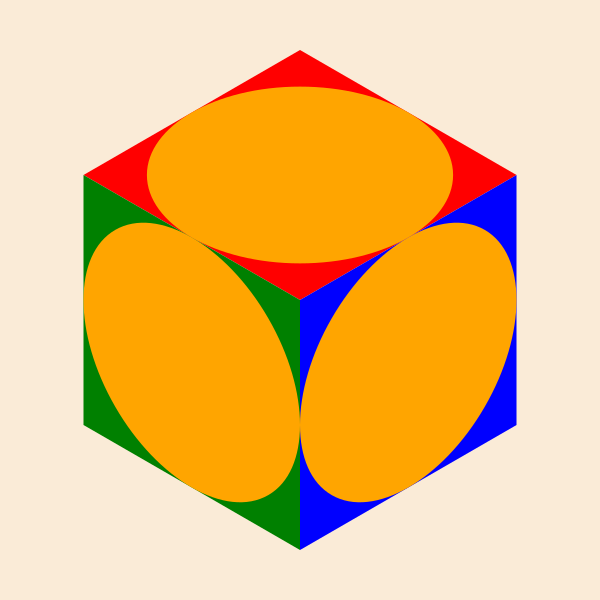
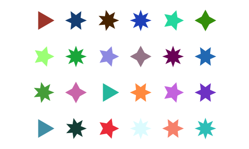
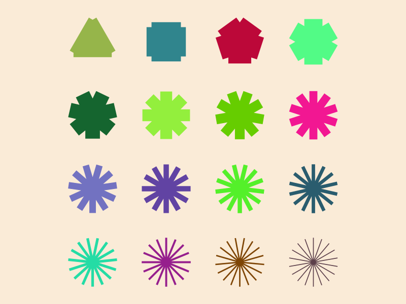

Simple graphics
In Luxor, there are different ways of working with graphical items:
Draw them immediately. Create lines and curves to build a path on the drawing. When you paint the path, the graphics are ‘fixed’, and you move on to the next.
Construct arrays of points - polygons - which you can draw at some later point. Watch out for a
vertices=trueoption, which returns coordinate data rather than adding shapes to the current path.You can combine these two approaches: create a path from lines and curves (and jumps), then store the path, ready for drawing later on.
Line width
The default line width in Luxor is 2 points. (Typically 1 point is 0.352777mm, 1/72.0inch.) Set the line width with setline. Find the current line width with getline. By default, line widths don't vary depending on the current drawing scale, but you can ask for them to be scaled - see Scaling-of-line-thickness.
Rectangles and boxes
Simple rectangle and box shapes can be made in different ways.
rulers()
sethue("grey40")
rect(Point(0, 0), 100, 100, action = :stroke)
sethue("blue")
box(Point(0, 0), 100, 100, action=:stroke)
rect rectangles are positioned by a corner, a box made with box can be defined either by its center and dimensions, or by two opposite corners.
If you want the coordinates of the corners of a box, rather than draw one immediately, use:
box(centerpoint, width, height, vertices=true)or
box(corner1, corner2, vertices=true)box is also able to draw some of the other Luxor objects, such as BoundingBoxes and Table cells, and usually also returns the coordinates of the corners.
box(Point(0, 0), 100, 100)4-element Array{Point,1}:
Point(-50.0, 50.0)
Point(-50.0, -50.0)
Point(50.0, -50.0)
Point(50.0, 50.0)To draw a box/rectangle with rounded corners, supply one or four values for corner radii.
setline(6)
box(O, 200, 150, 10, action = :stroke) # 1 value for all corners
sethue("purple")
box(O, 260, 220, [0, 15, 40, 80], action = :stroke) # different for each
Or you could smooth the sharp corners of a box, like so:
setline(4)
polysmooth(box(O, 200, 150, vertices=true), 10, action = :stroke)
The squircle function makes nicer shapes.
Triangles, pentagons, and regular polygons
For regular polygons, pentagons, and so on, see the section on Polygons and paths. If you like drawing hexagons, you could also read Hexagonal grids.
Circles and ellipses
There are various ways to make circles, including by center and radius, or passing through two or three points:
sethue("black")
p1 = Point(0, -50)
p2 = Point(100, 0)
p3 = Point(0, 65)
map(p -> circle(p, 4, action = :fill), [p1, p2, p3])
sethue("orange")
circle(center3pts(p1, p2, p3)..., action = :stroke)
sethue("red")
p1 = Point(0, 30)
p2 = Point(20, -40)
p3 = Point(50, 5)
circle.((p1, p2, p3), 3, action = :stroke)
circle(p1, p2, p3, action = :stroke)
The center3pts function returns the center position and radius of a circle passing through three points:
sethue("black")
p1 = Point(0, -50)
p2 = Point(100, 0)
p3 = Point(0, 65)
map(p -> circle(p, 4, action = :fill), [p1, p2, p3])
sethue("orange")
circle(center3pts(p1, p2, p3)..., action = :stroke)
With ellipse you can place ellipses and circles by defining the center point and the width and height.
tiles = Tiler(500, 300, 5, 5)
width = 20
height = 25
for (pos, n) in tiles
global width, height
randomhue()
ellipse(pos, width, height, action = :fill)
sethue("black")
label = string(round(width/height, digits=2))
textcentered(label, pos.x, pos.y + 25)
width += 2
end
ellipse can also construct polygons that are approximations to ellipses. You supply two focal points and a length which is the sum of the distances of a point on the perimeter to the two focii.
fontface("Menlo")
f1 = Point(-100, 0)
f2 = Point(100, 0)
circle.([f1, f2], 3, action = :fill)
epoly = ellipse(f1, f2, 250, vertices=true)
poly(epoly, action = :stroke, close=true)
pt = epoly[rand(1:end)]
poly([f1, pt, f2], action = :stroke)
label("f1", :W, f1, offset=10)
label("f2", :E, f2, offset=10)
label(string(round(distance(f1, pt), digits=1)), :SE, midpoint(f1, pt))
label(string(round(distance(pt, f2), digits=1)), :SW, midpoint(pt, f2))
label("ellipse(f1, f2, 250)", :S, Point(0, 75))
The advantage of this method is that there's a vertices=true option, allowing further scope for polygon manipulation.
f1 = Point(-100, 0)
f2 = Point(100, 0)
ellipsepoly = ellipse(f1, f2, 170, :none, vertices=true)
[ begin
setgray(rescale(c, 150, 1, 0, 1))
poly(offsetpoly(ellipsepoly, c), close=true, action = :fill);
rotate(π/20)
end
for c in 150:-10:1 ]
The ellipseinquad function constructs an ellipse that fits inside a four-sided quadrilateral.
pg = ngon(O, 250, 6, π/6, vertices=true)
top = vcat(O, pg[[3, 4, 5]])
left = vcat(O, pg[[1, 2, 3]])
right = vcat(O, pg[[5, 6, 1]])
sethue("red")
poly(top, action = :fill, close=true)
sethue("green")
poly(left, action = :fill, close=true)
sethue("blue")
poly(right, action = :fill, close=true)
sethue("orange")
ellipseinquad.((top, left, right), action = :fill)
circlepath constructs a circular path from Bézier curves, which allows you to use circles as paths.
setline(4)
tiles = Tiler(600, 250, 1, 5)
for (pos, n) in tiles
randomhue()
circlepath(pos, tiles.tilewidth/2, action = :path)
newsubpath()
circlepath(pos, rand(5:tiles.tilewidth/2 - 1), action = :fill, reversepath=true)
end
Circles and tangents
Functions to find tangents to circles include:
pointcircletangentfinds a point on a circle that lies on line through another pointcirclecircleoutertangentsfinds the points that lie on outer tangents to two circlescirclecircleinnertangentsfinds the points that lie on inner tangents to two circlescircletangent2circlesmakes circles of a particular radius tangential to two circlescirclepointtangentmakes circles of a particular radius passing through a point and tangential to another circle
point = Point(-150, 0)
circlecenter = Point(150, 0)
circleradius = 80
circle.((point, circlecenter), 5, action = :fill)
circle(circlecenter, circleradius, action = :stroke)
pt1, pt2 = pointcircletangent(point, circlecenter, circleradius)
circle.((pt1, pt2), 5, action = :fill)
sethue("grey65")
rule(point, slope(point, pt1))
rule(point, slope(point, pt2))
circle1center = Point(-150, 0)
circle1radius = 60
circle2center = Point(150, 0)
circle2radius = 80
circle.((circle1center, circle2center), 5, action = :fill)
circle(circle1center, circle1radius, action = :stroke)
circle(circle2center, circle2radius, action = :stroke)
p1, p2, p3, p4 = circlecircleoutertangents(
circle1center, circle1radius,
circle2center, circle2radius)
sethue("orange")
rule(p1, slope(p1, p2))
rule(p3, slope(p3, p4))
Finding the inner tangents requires a separate function.
circle1center = Point(-150, 0)
circle1radius = 60
circle2center = Point(150, 0)
circle2radius = 80
circle.((circle1center, circle2center), 5, action = :fill)
circle(circle1center, circle1radius, action = :stroke)
circle(circle2center, circle2radius, action = :stroke)
p1, p2, p3, p4 = circlecircleinnertangents(
circle1center, circle1radius,
circle2center, circle2radius)
label.(("p1", "p2", "p3", "p4"), :n, (p1, p2, p3, p4))
sethue("orange")
rule(p1, slope(p1, p2))
rule(p3, slope(p3, p4))
sethue("purple")
circle.((p1, p2, p3, p4), 3, action = :fill)
circletangent2circles takes the required radius and two existing circles:
circle1 = (Point(-100, 0), 90)
circle(circle1..., action = :stroke)
circle2 = (Point(100, 0), 90)
circle(circle2..., action = :stroke)
requiredradius = 25
ncandidates, p1, p2 = circletangent2circles(requiredradius, circle1..., circle2...)
if ncandidates==2
sethue("orange")
circle(p1, requiredradius, action = :fill)
sethue("green")
circle(p2, requiredradius, action = :fill)
sethue("purple")
circle(p1, requiredradius, action = :stroke)
circle(p2, requiredradius, action = :stroke)
end
# the circles are 10 apart, so there should be just one circle
# that fits there
requiredradius = 10
ncandidates, p1, p2 = circletangent2circles(requiredradius, circle1..., circle2...)
if ncandidates==1
sethue("blue")
circle(p1, requiredradius, action = :fill)
sethue("cyan")
circle(p1, requiredradius, action = :stroke)
end
circlepointtangent looks for circles of a specified radius that pass through a point and are tangential to a circle. There are usually two candidates.
circle1 = (Point(-100, 0), 90)
circle(circle1..., action = :stroke)
requiredradius = 50
requiredpassthrough = O + (80, 0)
ncandidates, p1, p2 = circlepointtangent(requiredpassthrough, requiredradius, circle1...)
if ncandidates==2
sethue("orange")
circle(p1, requiredradius, action = :stroke)
sethue("green")
circle(p2, requiredradius, action = :stroke)
end
sethue("black")
circle(requiredpassthrough, 4, action = :fill)
These last two functions can return 0, 1, or 2 points (since there are often two solutions to a specific geometric layout).
circlering constructs n circles inside an outer circle and tangent to it. It returns both an array of 'circles' ((pt, radius) tuples), and details of the circle that fits inside them.
background("grey10")
sethue("rebeccapurple")
setline(3)
circle(Point(0, 0), 200, :stroke)
cs, ic = circlering(Point(0, 0), 200, 10)
for c in cs
circle(first(c), last(c), :stroke)
end
circle(first(ic), last(ic), :stroke);fill-opacity:1;stroke:none;"/>
<path style="fill:none;stroke-width:3;stroke-linecap:butt;stroke-linejoin:miter;stroke:rgb(40%25,20%25,60%25);stroke-opacity:1;stroke-miterlimit:10;" d="M 600 225 C 600 335.457031 510.457031 425 400 425 C 289.542969 425 200 335.457031 200 225 C 200 114.542969 289.542969 25 400 25 C 510.457031 25 600 114.542969 600 225 Z M 600 225 "/>
<path style="fill:none;stroke-width:3;stroke-linecap:butt;stroke-linejoin:miter;stroke:rgb(40%25,20%25,60%25);stroke-opacity:1;stroke-miterlimit:10;" d="M 570.820312 314.808594 C 570.820312 340.882812 549.683594 362.015625 523.609375 362.015625 C 497.535156 362.015625 476.398438 340.882812 476.398438 314.808594 C 476.398438 288.734375 497.535156 267.597656 523.609375 267.597656 C 549.683594 267.597656 570.820312 288.734375 570.820312 314.808594 Z M 570.820312 314.808594 "/>
<path style="fill:none;stroke-width:3;stroke-linecap:butt;stroke-linejoin:miter;stroke:rgb(40%25,20%25,60%25);stroke-opacity:1;stroke-miterlimit:10;" d="M 494.425781 370.3125 C 494.425781 396.386719 473.289062 417.523438 447.214844 417.523438 C 421.140625 417.523438 400.003906 396.386719 400.003906 370.3125 C 400.003906 344.238281 421.140625 323.101562 447.214844 323.101562 C 473.289062 323.101562 494.425781 344.238281 494.425781 370.3125 Z M 494.425781 370.3125 "/>
<path style="fill:none;stroke-width:3;stroke-linecap:butt;stroke-linejoin:miter;stroke:rgb(40%25,20%25,60%25);stroke-opacity:1;stroke-miterlimit:10;" d="M 399.996094 370.3125 C 399.996094 396.386719 378.859375 417.523438 352.785156 417.523438 C 326.710938 417.523438 305.574219 396.386719 305.574219 370.3125 C 305.574219 344.238281 326.710938 323.101562 352.785156 323.101562 C 378.859375 323.101562 399.996094 344.238281 399.996094 370.3125 Z M 399.996094 370.3125 "/>
<path style="fill:none;stroke-width:3;stroke-linecap:butt;stroke-linejoin:miter;stroke:rgb(40%25,20%25,60%25);stroke-opacity:1;stroke-miterlimit:10;" d="M 323.601562 314.808594 C 323.601562 340.882812 302.464844 362.015625 276.390625 362.015625 C 250.316406 362.015625 229.179688 340.882812 229.179688 314.808594 C 229.179688 288.734375 250.316406 267.597656 276.390625 267.597656 C 302.464844 267.597656 323.601562 288.734375 323.601562 314.808594 Z M 323.601562 314.808594 "/>
<path style="fill:none;stroke-width:3;stroke-linecap:butt;stroke-linejoin:miter;stroke:rgb(40%25,20%25,60%25);stroke-opacity:1;stroke-miterlimit:10;" d="M 294.417969 225 C 294.417969 251.074219 273.28125 272.210938 247.210938 272.210938 C 221.136719 272.210938 200 251.074219 200 225 C 200 198.925781 221.136719 177.789062 247.210938 177.789062 C 273.28125 177.789062 294.417969 198.925781 294.417969 225 Z M 294.417969 225 "/>
<path style="fill:none;stroke-width:3;stroke-linecap:butt;stroke-linejoin:miter;stroke:rgb(40%25,20%25,60%25);stroke-opacity:1;stroke-miterlimit:10;" d="M 323.601562 135.191406 C 323.601562 161.265625 302.464844 182.402344 276.390625 182.402344 C 250.316406 182.402344 229.179688 161.265625 229.179688 135.191406 C 229.179688 109.117188 250.316406 87.984375 276.390625 87.984375 C 302.464844 87.984375 323.601562 109.117188 323.601562 135.191406 Z M 323.601562 135.191406 "/>
<path style="fill:none;stroke-width:3;stroke-linecap:butt;stroke-linejoin:miter;stroke:rgb(40%25,20%25,60%25);stroke-opacity:1;stroke-miterlimit:10;" d="M 399.996094 79.6875 C 399.996094 105.761719 378.859375 126.898438 352.785156 126.898438 C 326.710938 126.898438 305.574219 105.761719 305.574219 79.6875 C 305.574219 53.613281 326.710938 32.476562 352.785156 32.476562 C 378.859375 32.476562 399.996094 53.613281 399.996094 79.6875 Z M 399.996094 79.6875 "/>
<path style="fill:none;stroke-width:3;stroke-linecap:butt;stroke-linejoin:miter;stroke:rgb(40%25,20%25,60%25);stroke-opacity:1;stroke-miterlimit:10;" d="M 494.425781 79.6875 C 494.425781 105.761719 473.289062 126.898438 447.214844 126.898438 C 421.140625 126.898438 400.003906 105.761719 400.003906 79.6875 C 400.003906 53.613281 421.140625 32.476562 447.214844 32.476562 C 473.289062 32.476562 494.425781 53.613281 494.425781 79.6875 Z M 494.425781 79.6875 "/>
<path style="fill:none;stroke-width:3;stroke-linecap:butt;stroke-linejoin:miter;stroke:rgb(40%25,20%25,60%25);stroke-opacity:1;stroke-miterlimit:10;" d="M 570.820312 135.191406 C 570.820312 161.265625 549.683594 182.402344 523.609375 182.402344 C 497.535156 182.402344 476.398438 161.265625 476.398438 135.191406 C 476.398438 109.117188 497.535156 87.984375 523.609375 87.984375 C 549.683594 87.984375 570.820312 109.117188 570.820312 135.191406 Z M 570.820312 135.191406 "/>
<path style="fill:none;stroke-width:3;stroke-linecap:butt;stroke-linejoin:miter;stroke:rgb(40%25,20%25,60%25);stroke-opacity:1;stroke-miterlimit:10;" d="M 600 225 C 600 251.074219 578.863281 272.210938 552.789062 272.210938 C 526.71875 272.210938 505.582031 251.074219 505.582031 225 C 505.582031 198.925781 526.71875 177.789062 552.789062 177.789062 C 578.863281 177.789062 600 198.925781 600 225 Z M 600 225 "/>
<path style="fill:none;stroke-width:3;stroke-linecap:butt;stroke-linejoin:miter;stroke:rgb(40%25,20%25,60%25);stroke-opacity:1;stroke-miterlimit:10;" d="M 505.582031 225 C 505.582031 283.3125 458.3125 330.582031 400 330.582031 C 341.6875 330.582031 294.417969 283.3125 294.417969 225 C 294.417969 166.6875 341.6875 119.417969 400 119.417969 C 458.3125 119.417969 505.582031 166.6875 505.582031 225 Z M 505.582031 225 "/>
</g>
</svg>)
Crescents
Use crescent to construct crescent shapes. There are two methods. The first method allows the two arcs to have the same radius. The second method allows the two arcs to share the same centers.
# method 1: same radius, different centers
sethue("purple")
crescent(Point(-200, 0), 200, Point(-150, 0), 200, action = :fill)
# method 2: same center, different radii
sethue("orange")
crescent(O, 100, 200, action = :fill)
Paths and positions
A path is a sequence of lines and curves. You can add lines and curves to the current path with various functions, then use closepath to join the last point to the first. Once you fill or stroke it, the path is emptied, and you start again.
A path can have subpaths, created withnewsubpath, which can form holes.
There is a 'current point' which you can set with move, and which is updated after functions like line, rline, rmove, text, newpath, closepath, arc, and curve. Use currentpoint and hascurrentpoint to find out about it.
You can store a path for later use with storepath and draw it with drawpath. See Stored paths.
For more about paths, see Polygons and paths and Paths versus polygons.
Lines
Use line and rline to draw straight lines. line(pt1, pt2, action) makes a path consisting of a line between two points. line(pt) adds a line to the current path going from the most recent current point to pt. rline(pt) adds a line relative to the current point.
You can use rule to draw a horizontal line through a point. Supply an angle for lines at an angle to the current x-axis.
y = 10
for x in 10 .^ range(0, length=100, stop=3)
global y
circle(Point(x, y), 2, action = :fill)
rule(Point(x, y), -π/2, boundingbox=BoundingBox(centered=false))
y += 2
end
Use the boundingbox keyword argument to crop the ruled lines with a BoundingBox.
origin()
box(BoundingBox() * 0.9, action = :stroke)
for x in 10 .^ range(0, length=100, stop=3)
rule(Point(x, 0), π/2, boundingbox=BoundingBox() * 0.9)
rule(Point(-x, 0), π/2, boundingbox=BoundingBox() * 0.9)
end
Arrows
You can draw lines, arcs, and curves with arrows at the end with arrow.
| type | function call |
|---|---|
| straight between two points | arrow(pt, pt) |
| curved: radius + two angles | arrow(pt, rad, θ1, θ2) |
| Bezier 4 points | arrow(pt1, pt2, pt3, pt4, action) |
| Bezier start finish + box | arrow(pt1, pt2, [ht1, ht2]) |
For straight arrows, supply the start and end points. For arrows as circular arcs, you provide center, radius, and start and finish angles. You can optionally provide dimensions for the arrowheadlength and arrowheadangle of the tip of the arrow (angle in radians between side and center). The default line weight is 1.0, equivalent to setline(1), but you can specify another.
arrow(Point(0, 0), Point(0, -65))
arrow(Point(0, 0), Point(100, -65), arrowheadlength=20, arrowheadangle=pi/4, linewidth=.3)
arrow(Point(0, 0), 100, π, π/2, arrowheadlength=25, arrowheadangle=pi/12, linewidth=1.25)
If you provide four points, you can draw a Bézier curve with optional arrowheads at each end. Use the various options to control their presence and appearance.
pts = ngon(Point(0, 0), 100, 8, vertices=true)
sethue("mediumvioletred")
arrow(pts[2:5]..., :stroke, startarrow=false, finisharrow=true)
sethue("cyan4")
arrow(pts[3:6]..., startarrow=true, finisharrow=true)
sethue("midnightblue")
arrow(pts[[4, 2, 6, 8]]..., :stroke,
startarrow=true,
finisharrow=true,
arrowheadangle = π/6,
arrowheadlength = 35,
linewidth = 1.5)
Decoration
The arrow functions allow you to specify decorations - graphics at one or more points somewhere along the shaft. For example, say you want to draw a number and a circle at the midpoint of an arrow's shaft, you can define a function that draws text t in a circle of radius r like this:
function marker(r, t)
@layer begin
sethue("purple")
circle(Point(0, 0), r, :fill)
sethue("white")
fontsize(30)
text(string(t), halign=:center, valign=:middle)
end
endand then pass this to the decorate keyword argument of arrow. By default, the graphics origin when the function is called is placed at the midpoint (0.5) of the arrow's shaft.
pts = ngon(Point(0, 0), 100, 5, vertices=true)
sethue("mediumvioletred")
# using an anonymous function
arrow(pts[1:4]..., decorate = () -> marker(10, 3))
sethue("olivedrab")
# no arrow, just a graphic, at 0.75
arrow(pts[1:4]...,
decorate = () ->
ngon(Point(0, 0), 20, 4, 0, action = :fill),
decoration = 0.75, :none) # default action is :stroke
Use the decoration keyword to specify one or more locations other than the default 0.5.
The graphics environment provided by the decorate function is centered at each decoration point in turn, and rotated to the slope of the shaft at that point.
using Luxor
function fletcher()
line(O, polar(30, deg2rad(220)), action = :stroke)
line(O, polar(30, deg2rad(140)), action = :stroke)
end
@drawsvg begin
background("antiquewhite")
arrow(O, 150, 0, π + π/3,
linewidth=5,
arrowheadlength=50,
decorate=fletcher,
decoration=range(0., .1, length=3))
end 800 350;fill-opacity:1;stroke:none;"/>
<path style="fill:none;stroke-width:5;stroke-linecap:butt;stroke-linejoin:miter;stroke:rgb(0%25,0%25,0%25);stroke-opacity:1;stroke-miterlimit:10;" d="M 550 175 C 550 224.484375 525.59375 270.785156 484.769531 298.75 C 443.945312 326.714844 391.953125 332.746094 345.8125 314.871094 C 299.667969 296.992188 265.3125 257.507812 253.984375 209.339844 C 242.65625 161.167969 255.8125 110.507812 289.152344 73.941406 "/>
<path style=" stroke:none;fill-rule:nonzero;fill:rgb(0%25,0%25,0%25);fill-opacity:1;" d="M 277.015625 59.148438 L 325 45.097656 L 301.007812 88.960938 "/>
<path style="fill:none;stroke-width:5;stroke-linecap:butt;stroke-linejoin:miter;stroke:rgb(0%25,0%25,0%25);stroke-opacity:1;stroke-miterlimit:10;" d="M 550 175 L 569.285156 152.019531 "/>
<path style="fill:none;stroke-width:5;stroke-linecap:butt;stroke-linejoin:miter;stroke:rgb(0%25,0%25,0%25);stroke-opacity:1;stroke-miterlimit:10;" d="M 550 175 L 530.714844 152.019531 "/>
<path style="fill:none;stroke-width:5;stroke-linecap:butt;stroke-linejoin:miter;stroke:rgb(0%25,0%25,0%25);stroke-opacity:1;stroke-miterlimit:10;" d="M 547.183594 203.925781 L 570.539062 185.09375 "/>
<path style="fill:none;stroke-width:5;stroke-linecap:butt;stroke-linejoin:miter;stroke:rgb(0%25,0%25,0%25);stroke-opacity:1;stroke-miterlimit:10;" d="M 547.183594 203.925781 L 532.695312 177.65625 "/>
<path style="fill:none;stroke-width:5;stroke-linecap:butt;stroke-linejoin:miter;stroke:rgb(0%25,0%25,0%25);stroke-opacity:1;stroke-miterlimit:10;" d="M 538.84375 231.761719 L 565.390625 217.785156 "/>
<path style="fill:none;stroke-width:5;stroke-linecap:butt;stroke-linejoin:miter;stroke:rgb(0%25,0%25,0%25);stroke-opacity:1;stroke-miterlimit:10;" d="M 538.84375 231.761719 L 529.691406 203.191406 "/>
</g>
</svg>)
Custom arrowheads
To make custom arrowheads, you can define a three-argument function that draws them to your own design. This function takes the arguments:
the point at the end of the arrow's shaft
the point where the tip of the arrowhead would be
the angle of the shaft at the end
You can then use any code to draw the arrow. Pass this function to the arrow function's arrowheadfunction keyword.
function redbluearrow(shaftendpoint, endpoint, shaftangle)
@layer begin
sethue("red")
sidept1 = shaftendpoint + polar(10, shaftangle + π/2 )
sidept2 = shaftendpoint - polar(10, shaftangle + π/2)
poly([sidept1, endpoint, sidept2], action=:fill)
sethue("blue")
poly([sidept1, endpoint, sidept2], action=:stroke, close=false)
end
end
@drawsvg begin
background("antiquewhite")
arrow(O, O + (120, 120),
linewidth=4,
arrowheadlength=40,
arrowheadangle=π/7,
arrowheadfunction = redbluearrow)
arrow(O, 100, 3π/2, π,
linewidth=4,
arrowheadlength=20,
clockwise=false,arrowheadfunction=redbluearrow)
end 800 250;fill-opacity:1;stroke:none;"/>
<path style="fill:none;stroke-width:4;stroke-linecap:butt;stroke-linejoin:miter;stroke:rgb(0%25,0%25,0%25);stroke-opacity:1;stroke-miterlimit:10;" d="M 400 125 L 494.515625 219.515625 "/>
<path style="fill-rule:nonzero;fill:rgb(100%25,0%25,0%25);fill-opacity:1;stroke-width:4;stroke-linecap:butt;stroke-linejoin:miter;stroke:rgb(0%25,0%25,100%25);stroke-opacity:1;stroke-miterlimit:10;" d="M 487.445312 226.585938 L 520 245 L 501.585938 212.445312 "/>
<path style="fill:none;stroke-width:4;stroke-linecap:butt;stroke-linejoin:miter;stroke:rgb(0%25,0%25,0%25);stroke-opacity:1;stroke-miterlimit:10;" d="M 400 25 C 351.855469 25 310.546875 59.304688 301.703125 106.628906 "/>
<path style="fill-rule:nonzero;fill:rgb(100%25,0%25,0%25);fill-opacity:1;stroke-width:4;stroke-linecap:butt;stroke-linejoin:miter;stroke:rgb(0%25,0%25,100%25);stroke-opacity:1;stroke-miterlimit:10;" d="M 291.746094 105.703125 L 300 125 L 311.660156 107.550781 "/>
</g>
</svg>)
Arcs and curves
There are a few standard arc-drawing commands, such as curve, arc, carc, and arc2r. Because these are often used when building complex paths, they usually add arc sections to the current path. To construct a sequence of lines and arcs, use the :path action, followed by a final :stroke or similar.
curve constructs Bézier curves from control points:
setline(.5)
pt1 = Point(0, -125)
pt2 = Point(200, 125)
pt3 = Point(200, -125)
label.(string.(["O", "control point 1", "control point 2", "control point 3"]),
:e,
[O, pt1, pt2, pt3])
sethue("red")
map(p -> circle(p, 4, action=:fill), [O, pt1, pt2, pt3])
line(Point(0, 0), pt1, action=:stroke)
line(pt2, pt3, action = :stroke)
sethue("black")
setline(3)
# start a path
move(Point(0, 0))
curve(pt1, pt2, pt3) # add to current path
strokepath()
arc2r draws a circular arc centered at a point that passes through two other points:
tiles = Tiler(700, 200, 1, 6)
for (pos, n) in tiles
c1, pt2, pt3 = ngon(pos, rand(10:50), 3, rand(0:pi/12:2pi), vertices=true)
sethue("black")
map(pt -> circle(pt, 4, action = :fill), [c1, pt3])
sethue("red")
circle(pt2, 4, action = :fill)
randomhue()
arc2r(c1, pt2, pt3, action = :stroke)
end
arc2sagitta and carc2sagitta make circular arcs based on two points and the sagitta.
pt1 = Point(-100, 0)
pt2 = Point(100, 0)
for n in reverse(range(1, length=7, stop=120))
sethue("red")
rule(Point(0, -n))
sethue(LCHab(70, 80, rescale(n, 120, 1, 0, 359)))
pt, r = arc2sagitta(pt1, pt2, n, action = :fillpreserve)
sethue("black")
strokepath()
text(string(round(n)), O + (120, -n))
end
circle.((pt1, pt2), 5, action = :fill)
More curved shapes: sectors, spirals, and squircles
A sector (technically an "annular sector") has an inner and outer radius, as well as start and end angles.
sethue("tomato")
sector(50, 90, π/2, 0, action=:fill)
sethue("olive")
sector(Point(O.x + 200, O.y), 50, 90, 0, π/2, action=:fill)
You can also supply a value for a corner radius. The same sector is drawn but with rounded corners.
sethue("tomato")
sector(50, 90, π/2, 0, 15, action = :fill)
sethue("olive")
sector(Point(O.x + 200, O.y), 50, 90, 0, π/2, 15, action = :fill)
A pie (or wedge) has start and end angles.
pie(0, 0, 100, π/2, π, action = :fill)
To construct spirals, use the spiral function. These can be drawn directly, or used as polygons. The default is to draw Archimedean (non-logarithmic) spirals.
spiraldata = [
(-2, "Lituus", 50),
(-1, "Hyperbolic", 100),
( 1, "Archimedes", 1),
( 2, "Fermat", 5)]
grid = GridRect(O - (200, 0), 130, 50)
for aspiral in spiraldata
@layer begin
translate(nextgridpoint(grid))
spiral(last(aspiral), first(aspiral), period=20π, action = :stroke)
label(aspiral[2], :S, offset=100)
end
end
Use the log=true option to draw logarithmic (Bernoulli or Fibonacci) spirals.
spiraldata = [
(10, 0.05),
(4, 0.10),
(0.5, 0.17)]
grid = GridRect(O - (200, 0), 175, 50)
for aspiral in spiraldata
@layer begin
translate(nextgridpoint(grid))
spiral(first(aspiral), last(aspiral), log=true, period=10π, action = :stroke)
label(string(aspiral), :S, offset=100)
end
endModify the stepby and period parameters to taste, or collect the vertices for further processing.

A squircle is a cross between a square and a circle. You can adjust the squariness and circularity of it to taste by supplying a value for the root (keyword rt):
setline(2)
tiles = Tiler(600, 250, 1, 3)
for (pos, n) in tiles
sethue("lavender")
squircle(pos, 80, 80, rt=[0.3, 0.5, 0.7][n], action = :fillpreserve)
sethue("grey20")
strokepath()
textcentered("rt = $([0.3, 0.5, 0.7][n])", pos)
end
Stars and crosses
Use star to make a star. You can draw it immediately, or use the array of points it can create.
tiles = Tiler(400, 300, 4, 6, margin=5)
for (pos, n) in tiles
randomhue()
star(pos, tiles.tilewidth/3, rand(3:8), 0.5, 0, action = :fill)
end
The ratio determines the length of the inner radius compared with the outer.
tiles = Tiler(800, 250, 1, 6, margin=10)
for (pos, n) in tiles
s = star(pos, tiles.tilewidth/2, 5, 1/n, 0, action = :stroke)
l2 = distance(pos, s[1])
l1 = distance(pos, s[2])
text(string(round(l1/l2, digits=2)), pos, halign=:center)
endUse polycross to draw a cross-shaped polygon.
tiles = Tiler(600, 600, 4, 4, margin=10)
for (pos, n) in tiles
randomhue()
polycross(pos, min(tiles.tileheight/3, tiles.tilewidth/3),
n + 2, # number of points
rescale(n, 1, length(tiles), 0.9, 0.1), # ratio
0, # orientation
action=:fill)
end
Stored paths
It's possible to store the current path in a Path object. For example, this code:
fontsize(160)
fontface("Bodoni-Poster")
textpath("†", O, halign=:center, valign=:middle)
dagger = storepath()stores the instructions to build the current path (which describe the dagger symbol) in dagger.
The dagger is a Luxor Path type, and contains:
PathMove(Point(2.0, 90.5625)),
PathCurve(Point(4.08203125, 68.16015625), Point(11.28125, 45.28125), Point(24.8828125, 26.40234375)),
PathCurve(Point(17.51953125, 22.87890625), Point(2.0, 14.71875), Point(2.0, 5.12109375)),
PathCurve(Point(2.0, 2.5625), Point(3.12109375, 0.640625), Point(5.83984375, 0.640625)),
PathCurve(Point(12.8828125, 0.640625), Point(11.6015625, 14.2421875), Point(26.16015625, 14.2421875)),
PathCurve(Point(35.76171875, 14.2421875), Point(42.0, 7.83984375), Point(42.0, -1.59765625)),
PathCurve(Point(42.0, -10.3984375), Point(34.9609375, -17.4375), Point(26.16015625, -17.4375)),
PathCurve(Point(10.9609375, -17.4375), Point(13.04296875, -3.6796875), Point(6.48046875, -3.6796875)),
PathCurve(Point(3.6015625, -3.6796875), Point(1.83984375, -6.3984375), Point(1.83984375, -9.12109375)),
PathCurve(Point(1.83984375, -14.3984375), Point(12.2421875, -23.6796875), Point(15.44140625, -26.87890625)),
PathCurve(Point(18.640625, -30.078125), Point(19.76171875, -34.3984375), Point(19.76171875, -38.71875)),
PathCurve(Point(19.76171875, -49.7578125), Point(10.9609375, -56.640625), Point(0.40234375, -56.640625)),
PathCurve(Point(-11.1171875, -56.640625), Point(-19.91796875, -49.7578125), Point(-19.91796875, -38.71875)),
PathCurve(Point(-19.91796875, -34.3984375), Point(-18.80078125, -30.078125), Point(-15.59765625, -26.87890625)),
PathCurve(Point(-12.3984375, -23.6796875), Point(-2.0, -14.3984375), Point(-2.0, -9.12109375)),
PathCurve(Point(-2.0, -6.3984375), Point(-3.7578125, -3.6796875), Point(-6.640625, -3.6796875)),
PathCurve(Point(-13.19921875, -3.6796875), Point(-11.1171875, -17.4375), Point(-26.3203125, -17.4375)),
PathCurve(Point(-35.1171875, -17.4375), Point(-42.16015625, -10.3984375), Point(-42.16015625, -1.59765625)),
PathCurve(Point(-42.16015625, 7.83984375), Point(-35.91796875, 14.2421875), Point(-26.3203125, 14.2421875)),
PathCurve(Point(-11.7578125, 14.2421875), Point(-13.0390625, 0.640625), Point(-6.0, 0.640625)),
PathCurve(Point(-3.27734375, 0.640625), Point(-2.16015625, 2.5625), Point(-2.16015625, 5.12109375)),
PathCurve(Point(-2.16015625, 14.71875), Point(-17.6796875, 22.87890625), Point(-25.0390625, 26.40234375)),
PathCurve(Point(-11.4375, 45.28125), Point(-4.23828125, 68.16015625), Point(-2.16015625, 90.5625)),
PathClose(),
PathMove(Point(48.87890625, 56.640625))You can draw this later:
for θ in range(0, step=2π/10, length=10)
@layer begin
rotate(θ)
translate(150, 0)
rotate(π/2)
drawpath(dagger, action = :fill)
end
endAfter you've stored the current path, it's still active. You might want to use newpath() before starting the next one. The drawpath() function will by default start a new path but there is an option to continue drawing the current one.
Other functions for working with stored paths include:
drawpathdraw all or part of a stored path using the current graphics statepathsampleresample the stored pathpathlengthfind the length of a stored pathBoundingBoxfind the bounding box of a stored path
Julia logos
A couple of functions, julialogo and juliacircles, provide you with instant access to the Julia logo and the three colored circles/dots:
cells = Table([300], [350, 350])
@layer begin
translate(cells[1])
translate(-165, -114)
rulers()
julialogo()
end
@layer begin
translate(cells[2])
translate(-165, -114)
rulers()
julialogo(action=:clip)
for i in 1:500
@layer begin
translate(rand(0:400), rand(0:250))
juliacircles(10)
end
end
clipreset()
end
There are various options for julialogo() to control coloring and positioning.
The four standard Julia colors are available as RGB tuples as Luxor.julia_blue, Luxor.julia_green, Luxor.julia_purple, Luxor.julia_red:
julia> Luxor.julia_red
(0.796, 0.235, 0.2)Hypotrochoids
hypotrochoid makes hypotrochoids. The result is a polygon. You can either draw it directly, or pass it on for further polygon fun, as here, which uses offsetpoly to trace round it a few times.
origin()
background("grey15")
sethue("antiquewhite")
setline(1)
p = hypotrochoid(100, 25, 55, action = :stroke, stepby=0.01, vertices=true)
for i in 0:3:15
poly(offsetpoly(p, i), action = :stroke, close=true)
end
There's a matching epitrochoid function.
Ticks
The tickline function lets you divide the space between two points by drawing ‘ticks’, short parallel lines positioned equidistant between the two points.
In its simplest form the function can used to draw basic number lines, complete with automatic text labels.
background("antiquewhite")
# major defaults to 1
tickline(Point(-350, -100), Point(350, -100))
# three major ticks inserted
tickline(Point(-350, 0), Point(350, 0),
major=3,
startnumber=0, finishnumber=100)
# four minor ticks inserted between each major
tickline(Point(-350, 100), Point(350, 100), major=3, minor=4)The function returns the positions of the generated ticks in two arrays of points - the locations of the major and minor ticks.
The spaced positions (linear or logarithmic) are useful even when you switch off the display of text using vertices=true, which just returns vertices.
# no axis
tickline(Point(-350, -100), Point(350, -100), minor=9, axis=false)
# logarithmic
majticks, minticks = tickline(Point(-350, 0), Point(350, 0),
major=9,
startnumber=1,
finishnumber=10,
log=true,
vertices=false)
# just the vertices
majticks, minticks = tickline(Point(-350, 100), Point(350, 100),
major=9,
minor=4,
log=true,
axis=false,
vertices=true)
circle.(majticks, 5, action = :fill)
box.(minticks, 1, 25, action = :fill)You can pass a function that generates custom graphics and text for each tick.
function color_temp(n, pos;
startnumber = 0,
finishnumber = 1,
nticks = 1)
k = rescale(n, 0, nticks - 1, startnumber, finishnumber)
sethue(RGB(colormatch(k)))
circle(pos, 20, action = :fillpreserve)
sethue("white")
strokepath()
text("$(convert(Int, floor(k))) nm", pos - (0, 30), halign=:left, angle=-π/4)
end
tickline(Point(-350, 0), Point(350, 0),
startnumber=350,
finishnumber=750,
major=10,
major_tick_function=color_temp)Sometimes you just want a sequence of spaced points.
_, minticks = tickline(Point(-400, 0), Point(260, 0),
major=0, minor=40,
log=true,
axis=false,
vertices=true)
for (n, pt) in enumerate(minticks)
k = rescale(n, 1, length(minticks), 0, 1)
sethue(LCHab(60, 100, 360k))
setline(1/k)
wave = [pt + Point(120k * sin(y), 600/2π * y) for y in -π:π/20:π]
poly(wave, action = :stroke)
endCropmarks
If you want cropmarks (aka trim marks), use the cropmarks function, supplying the centerpoint, followed by the width and height:
cropmarks(O, 1200, 1600)
cropmarks(O, paper_sizes["A0"]...)sethue("red")
box(O, 150, 150, action = :stroke)
cropmarks(O, 150, 150)
Dimensioning
Simple dimensioning graphics can be generated with dimension. To convert from the default unit (PostScript points), or to modify the dimensioning text, supply a function to the format keyword argument.

setline(0.75)
sethue("purple")
pentagon = ngonside(O, 120, 5, vertices=true)
poly(pentagon, action = :stroke, close=true)
circle.(pentagon, 2, action = :fill)
fontsize(6)
label.(split("12345", ""), :NE, pentagon)
fontface("Menlo")
fontsize(10)
sethue("grey30")
dimension(O, pentagon[4],
fromextension = [0, 0])
dimension(pentagon[1], pentagon[2],
offset = -60,
fromextension = [20, 50],
toextension = [20, 50],
textrotation = 2π/5,
textgap = 20,
format = (d) -> string(round(d, digits=4), "pts"))
dimension(pentagon[2], pentagon[3],
offset = -40,
format = string)
dimension(pentagon[5], Point(pentagon[5].x, pentagon[4].y),
offset = 60,
format = (d) -> string("approximately ",round(d, digits=4)),
fromextension = [5, 5],
toextension = [80, 5])
dimension(pentagon[1], midpoint(pentagon[1], pentagon[5]),
offset = 70,
fromextension = [65, -5],
toextension = [65, -5],
texthorizontaloffset = -5,
arrowheadlength = 5,
format = (d) ->
begin
if isapprox(d, 60.0)
string("exactly ", round(d, digits=4), "pts")
else
string("≈ ", round(d, digits=4), "pts")
end
end)
dimension(pentagon[1], pentagon[5],
offset = 120,
fromextension = [5, 5],
toextension = [115, 5],
textverticaloffset = 0.5,
texthorizontaloffset = 0,
textgap = 5)Barcharts
For simple barcharts, use the barchart function, supplying an array of numbers:
fontsize(7)
sethue("black")
v = rand(-100:100, 25)
barchart(v, labels=true)
To change the way the bars and labels are drawn, define some functions and pass them as keyword arguments:
function mybarfunction(values, i, low, high, barwidth, scaledvalue)
@layer begin
extremes = extrema(values)
sethue(Colors.HSB(rescale(values[i], extremes[1], extremes[2], 0, 360), 1.0, 0.5))
csize = rescale(values[i], extremes[1], extremes[2], 5, 15)
circle(high, csize, action = :fill)
setline(1)
sethue("blue")
line(low, high, action = :stroke)
sethue("white")
text(string(values[i]), high, halign=:center, valign=:middle)
end
end
function mylabelfunction(values, i, low, high, barwidth, scaledvalue)
@layer begin
translate(low)
text(string(values[i]), O + (0, 10), halign=:center, valign=:middle)
end
end
v = rand(1:100, 15)
bbox = BoundingBox() * 0.8
box(bbox, action = :clip)
p = barchart(v, boundingbox=bbox, barfunction=mybarfunction, labelfunction=mylabelfunction)
rule(p[1])
Box maps
The boxmap function divides a rectangular area into a sorted arrangement of smaller boxes or tiles based on the values of elements in an array.
This example uses the Fibonacci sequence to determine the area of the boxes. Notice that the values are sorted in reverse, and are scaled to fit in the available area.
You specify the top left corner of the graphic, the width, and the height.
fib = [1, 1, 2, 3, 5, 8, 13, 21, 34, 55, 89, 144]
# make a boxmap and store the tiles
tiles = boxmap(fib, BoundingBox()[1], 800, 450)
for (n, t) in enumerate(tiles)
randomhue()
bb = BoundingBox(t)
sethue("black")
box(bb - 5, action = :stroke)
randomhue()
box(bb - 8, action = :fill)
# text labels
sethue("white")
# rescale text to fit better
fontsize(boxwidth(bb) > boxheight(bb) ? boxheight(bb)/4 : boxwidth(bb)/4)
text(string(sort(fib, rev=true)[n]),
midpoint(bb[1], bb[2]),
halign=:center,
valign=:middle)
end